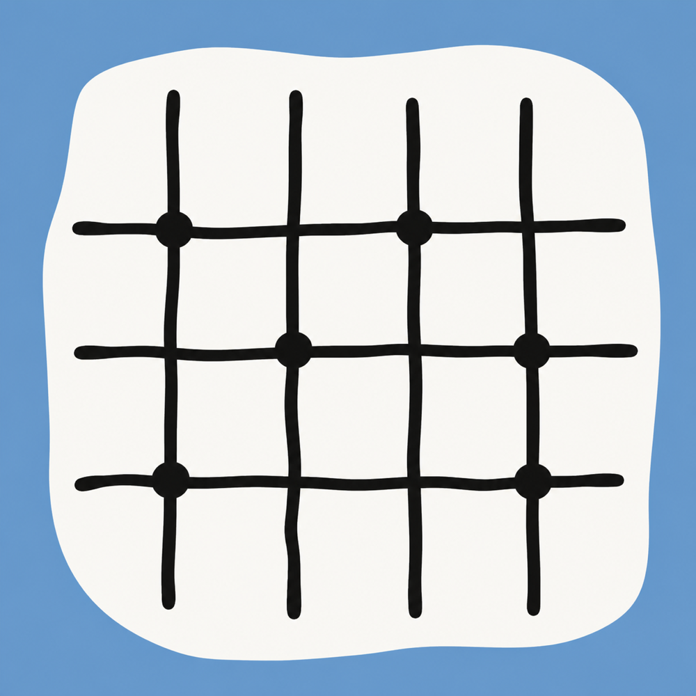
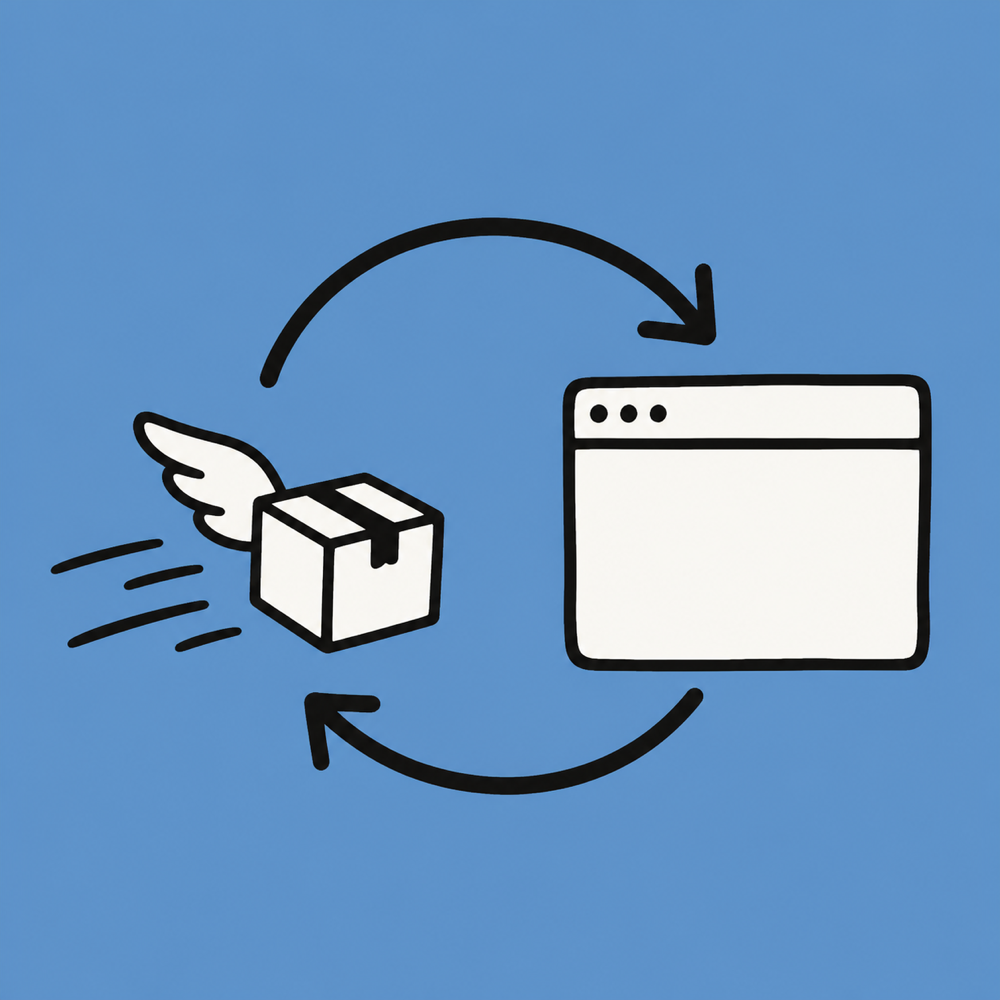
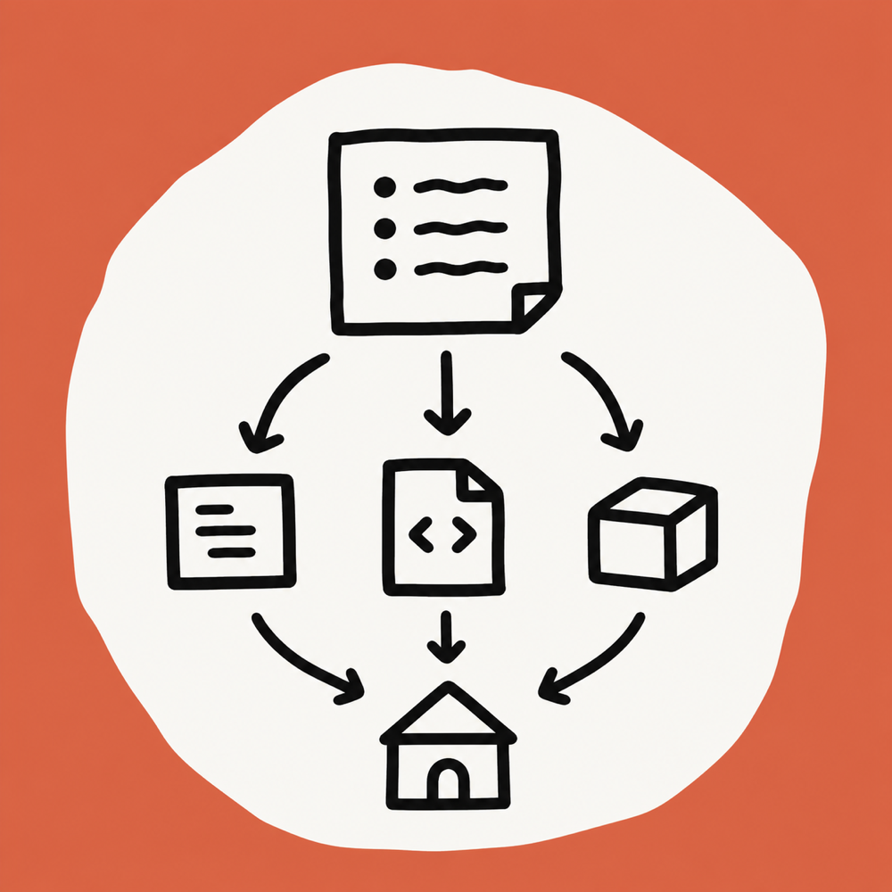
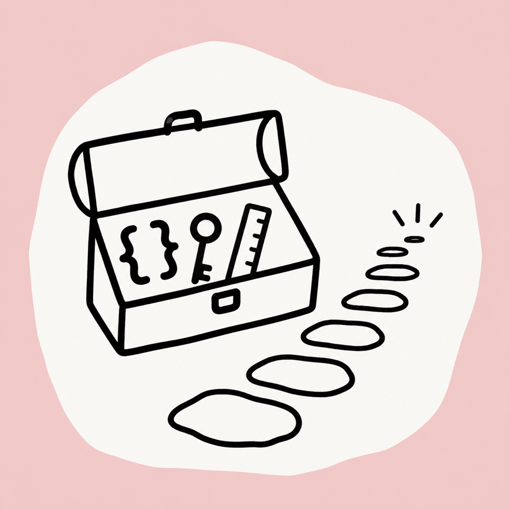
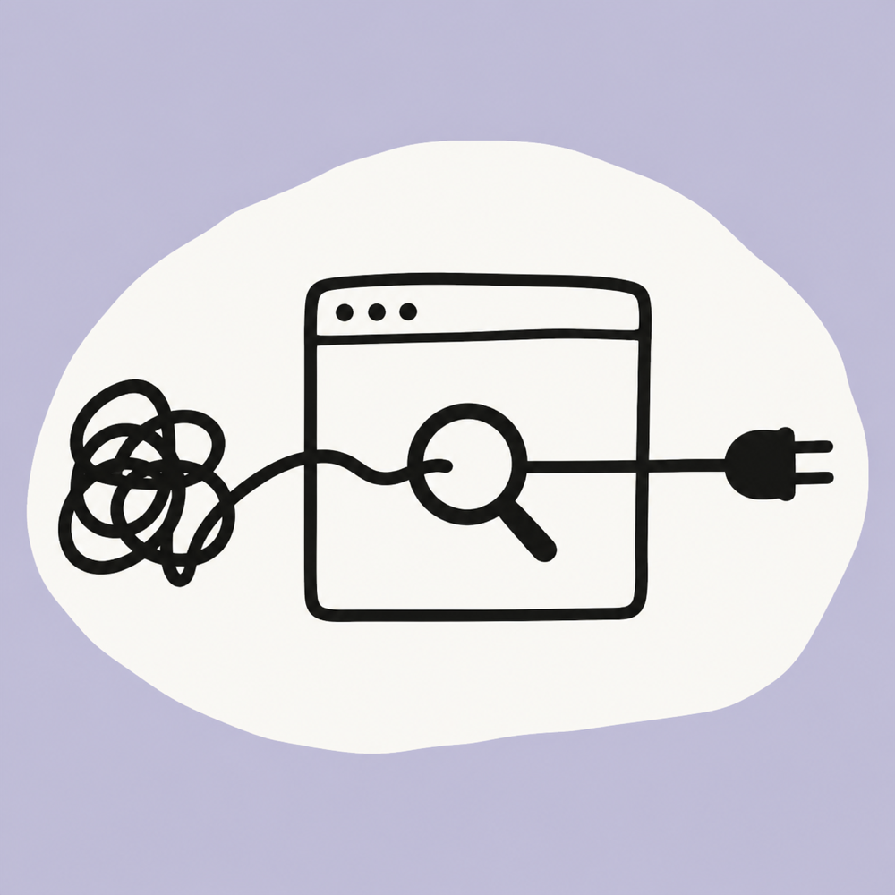

Mar 2025
Report
Learning Route Planning for 25 Spring
GPU operator kernel development, CUDA programming, deep learning with PyTorch — a semester roadmap.
GPU operator kernel development, CUDA programming, deep learning with PyTorch — a semester roadmap.
Parallelizing Mandelbrot generation with ISPC — spatial decomposition and performance analysis.
Sparse matrix chain storage — from enums and unions to a full AC implementation.

A guide to setting up automated course-watching tools with Chromium, Tampermonkey, and user scripts.
From prefix functions to LeetCode — a step-by-step derivation of the KMP algorithm.
Using Microsoft's winget tool to manage software updates with domestic mirrors.

Quick-start guide to Makefile — from single-file compilation to step-by-step builds.

Python solutions to 10 programming exercises, from seat classification to ID validation.

An important notice about homework sharing, copyright, and academic ethics.
Fixing the "program does not exist" error in VSCode by correcting launch.json paths.
